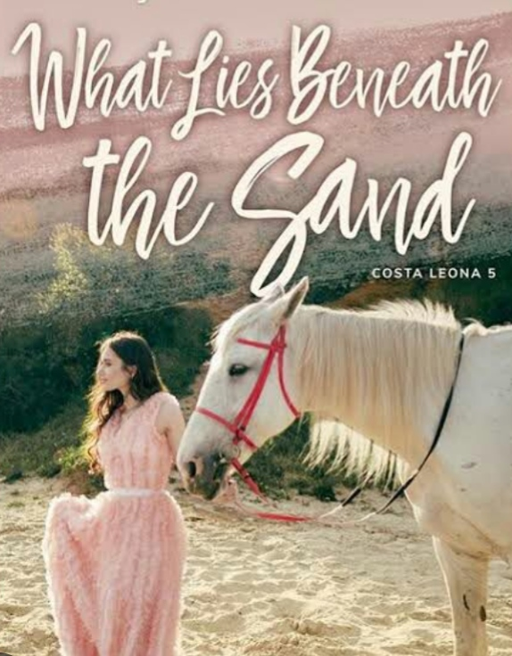

What Lies Beneath
Simula

Simula
He is the best artist. He knows how to color things like how it is supposed to be. Na ang langit at dagat ay asul. Ang mga dahon berde. Ang araw, dilaw. Ang mga ulap, puti.
dugo, pula.
color assigned perfectly on things...
And you don't question it because in your heart you know those things were colored perfectly. Not just because He wants it that way, but because it feels that way.
Tumingala ako. Isang lawin ang nakita kong matulin na lumilipad sa langit. Maybe, hunting for food. Maybe, enjoying the view.
inaybay ng aking kamay ang mga halamang nakapalibot sa bukana ng isang matayog at masikot na tarangkahan. Gawa sa tanso at bukod sa totoong nakapalibot na baging, may ilan din itong disenyong ganoon.
want read more? order now!